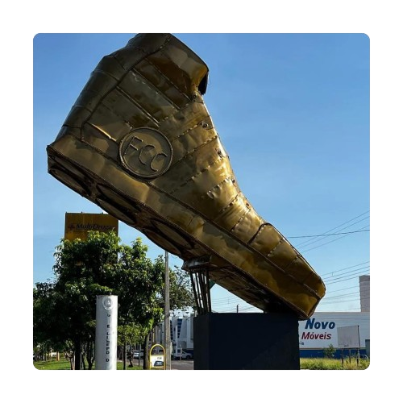

Calçado Infantil de Birigui recebe reconhecimento do Selo de Indicação de Procedência
O Selo de Indicação de Procedência (IP) é um tipo de reconhecimento que faz parte das Indicações Geográficas,
regulamentado pelo Instituto Nacional da Propriedade Industrial (INPI) no Brasil. Esse selo é concedido a produtos
que têm uma reputação, característica ou qualidade diferenciada, ligada à sua origem geográfica específica.

No dia 21 de março de 2023, Birigui foi oficialmente reconhecida como Indicação de Procedência do Calçado
Infantil pelo INPI - Instituto Nacional da Propriedade Industrial. Este reconhecimento tem como objetivo preservar
e valorizar a cultura e tradição da fabricação de calçados no município.
A Indicação de Procedência destaca a origem dos produtos e suas características únicas. O reconhecimento busca proteger
o nome geográfico, além de promover a região e os produtores associados. Assim, a indicação geográfica valoriza os
produtores, o produto e o território.
